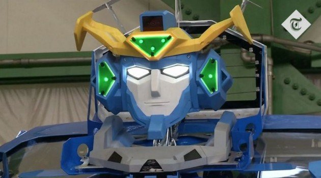

Ingenieros japoneses lograron desarrollar un vehículo que puede convertirse en un robot humanoide
05-05-201816:27 h
En Japón crean un Transformer real gracias a sus ingenieros que logran desarrollar un vehículo que se transforma en un robot humanoide al mejor estilo de la exitosa saga de películas.
Así es la cara de J-deite Ride
Transformers fue una serie de dibujos animados creada en 1984 por Hasbro. Su idea era promover sus juguetes que podían convertirse de vehículos a robots. En el 2007 se volvió a popularizar cuando arrancó la saga de películas basada en serie que ha sido muy exitosa recaudando USD 3,7 billones en los cinco filmes dirigidos por Michael Bay.
La serie motivó a un grupo de japoneses a construir uno de estos robots que funcionara en la vida real. La creación de 3,6 metros fue producida por un grupo de ingenieros de Brave Robotics, SoftBank subsidiary Asratec y Sansei Technologies.
“Yo crecí soñando que los robots eran capaces de este tipo de cosa, esa fue mi motivación para desarrollar este robot”, dijo Ishida.
El robot que puede confundirse con los autobots Bumblebee u Optimus Prime se transforma en 60 segundos de un humanoide parado en dos ‘piernas’ a un vehículo que luce como un auto deportivo de alta gama.
Un llamativo detalle es que el vehículo, nombrado J-deite Ride, puede hacer su metamorfosis con un pasajero adentro sin que le suceda nada. Kenji Ishida, CEO de Brave Robotics, habló de su motivación para construir esta impresionante máquina que también camina.
Esta no es la primera vez que una compañía intenta hacer que los Transformers pase de la fantasía de las películas a la vida real. El año pasado, Gennadiy and Sergey Kocherga, un padre e hijo en Rusia, convirtieron un LADA, en una robot que se erguía en dos piernas.